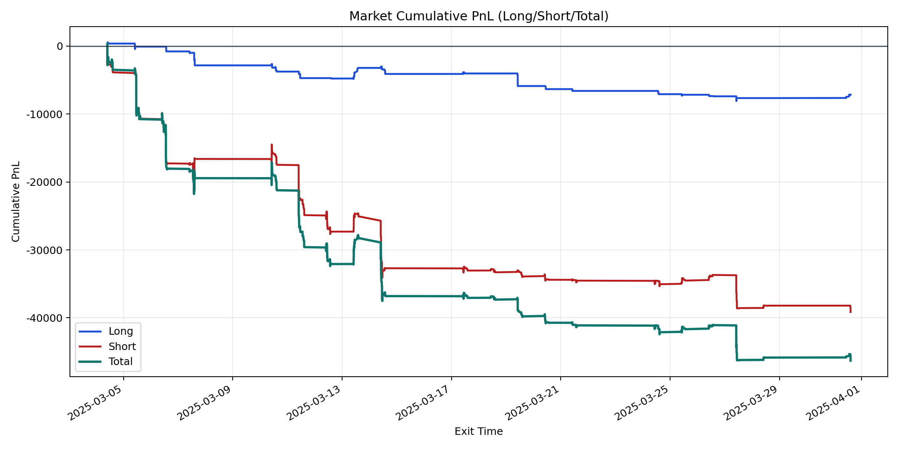
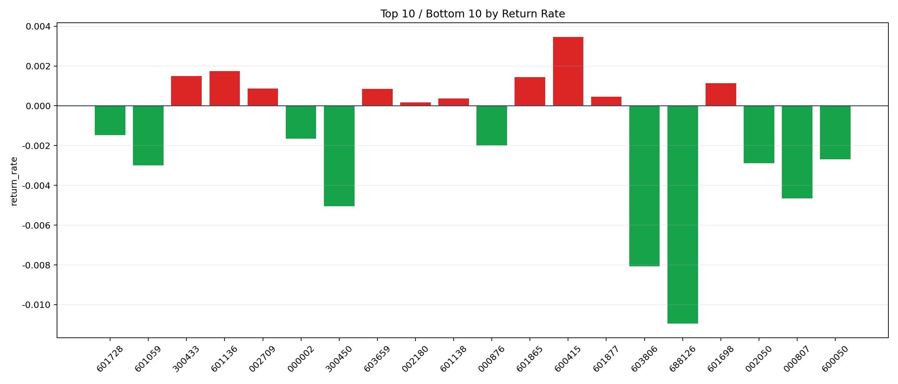

| repo_root | /home/haoranyou/data/output/dynamic_AUM_TAKER_index300 |
|---|---|
| period_months | 1 |
| period_label | 2025-03-04_to_2025-03-31 |
| start_time | 2025-03-04 09:47:17 |
| end_time | 2025-03-31 14:24:27 |
| n_trades | 2060 |
| n_symbols | 33 |
| total_pnl | -46314.64205000038 |
| long_total_pnl | -7156.083749999882 |
| short_total_pnl | -39158.5583000005 |
| total_entry_notional | 36848901.00000001 |
| long_entry_notional | 5815890.0 |
| short_entry_notional | 31033011.0 |
| total_return_rate | -0.001256879874110774 |
| long_return_rate | -0.0012304365711868488 |
| short_return_rate | -0.0012618356078951056 |
| top_symbols_by_return | ["600415", "601136", "300433", "601865", "601698", "002709", "603659", "601877", "601138", "002180"] |
| bottom_symbols_by_return | ["688126", "603806", "300450", "000807", "601059", "002050", "600050", "000876", "000002", "601728"] |

